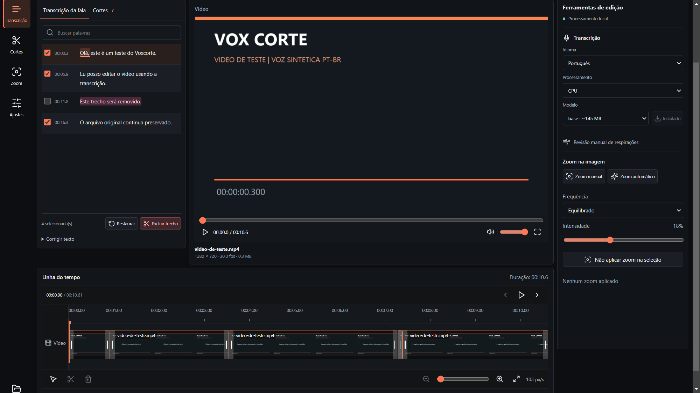
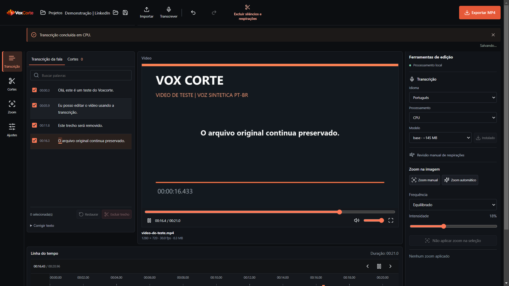

Zoom com intenção
Crie aproximações secas e movimentos lentos. Ajuste manualmente ou aplique um padrão automático.
FEITO PARA QUEM CRIA CONTEÚDO
Menos tempo cortando.
Mais tempo criando.
Apague uma frase. Corte o vídeo. Dê dinâmica com zoom.
Tudo no seu computador, sem mais uma assinatura.

Seu vídeo não vai para um servidor.
A edição sai no áudio e no vídeo.
Revise, restaure e tente de novo.
DA FALA À MONTAGEM
Um fluxo direto para transformar suas gravações em vídeos com ritmo.

Crie aproximações secas e movimentos lentos. Ajuste manualmente ou aplique um padrão automático.
Baixe um modelo no primeiro uso. Depois, transcreva localmente, inclusive offline.
Exporte com cortes e zooms aplicados. Escolha o nome e o destino do vídeo final.
VEJA ACONTECER
Uma demonstração curta do fluxo, dentro do aplicativo real.
UM ARQUIVO. VÁRIAS POSSIBILIDADES.
A fala vira palavras com timestamps.
Corte pelo texto, revise pausas e aplique zoom.
Veja a montagem e gere o MP4.
Gravação real do app. Mídia de teste e narração sintéticas. Esperas de processamento abreviadas.
Ver testes e limitaçõesFEITO A PARTIR DE UMA NECESSIDADE REAL
Organizar cortes e dar dinâmica com zoom estava consumindo meu tempo. As ferramentas que encontrei quase sempre pediam mais uma assinatura. O Vox Corte nasceu para resolver essa parte do meu processo, sem depender de uma API paga.
PRONTO PARA O PRÓXIMO VÍDEO?
Baixe o Vox Corte e experimente com uma gravação sua.
Baixar para WindowsNotas da versão e outros downloadsReserve espaço para o aplicativo, modelos, cache e vídeos exportados. NVIDIA é opcional; a transcrição também funciona por CPU.
Este instalador ainda não tem certificado digital. O Windows pode exibir um aviso de editor desconhecido. Confira a origem e o hash antes de executar. Não desative as proteções do sistema.
SHA-256 · versão 1.12.2
d0616370f81712c499cd18b006d1565164d300f24629db830c844766f13f6c6dCompare com Get-FileHash -Algorithm SHA256 .\Vox-Corte-Instalar-1.12.2.exe no PowerShell.
Não. Esta versão é disponibilizada gratuitamente, sem API paga obrigatória ou assinatura para o fluxo principal. O código e as versões estão neste GitHub.
Não para processamento. A transcrição, análise e exportação acontecem no seu computador. O primeiro download do aplicativo e dos modelos exige internet. Este site não tem analytics ou rastreadores próprios.
Sim. Excluir trecho remove o intervalo correspondente de áudio e vídeo na exportação. Corrigir texto altera somente a transcrição. O arquivo original não é sobrescrito.
Não. Revise os cortes antes de exportar: a detecção de pausas e possíveis respirações é heurística. O zoom usa padrões de enquadramento, sem rastreamento de rosto. Você pode ajustar ou remover os efeitos.
O instalador disponível é para Windows 10 e 11, 64 bits. Não há instalador publicado para Mac, Linux ou celular.
Os projetos são locais e guardam as decisões de edição. Mantenha a mídia no caminho original para reabrir. No aplicativo instalado, os dados ficam na pasta de dados do usuário. A exportação vai para a pasta escolhida por você.
Aplicar cortes e zoom exige decodificar e codificar o vídeo. O tempo varia com resolução, FPS, quantidade de efeitos e hardware. A barra do aplicativo informa andamento e velocidade reais.